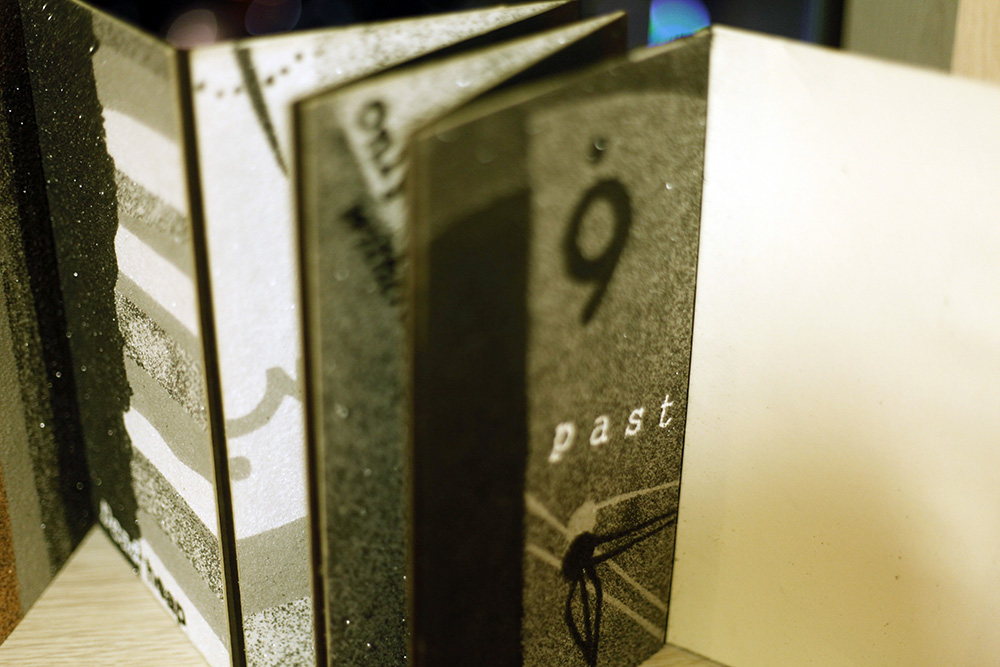

Visual Book - Invisible Cities
2012.March - 2012.June

In this project, I visualize one of the cities from Invisible cities by Italo Calvino. I deeply inspired by the text dealing with the concept of memory and time. Sand is a main material of this book.
Advisor : Prof. Young Min Moon
This project is done by Seyeong Kim in Humanities & Creativity class at Dept. of Art & Technology, Sogang University.